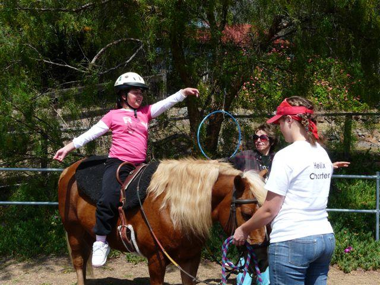
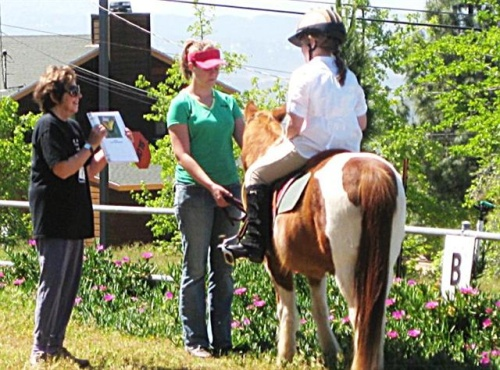
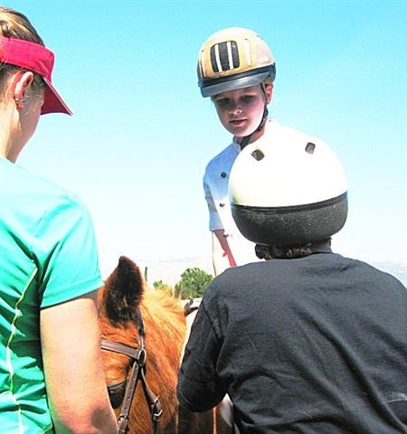

Local Equestrian Therapy Center Now Enrolling Special Needs Children for Summer Program—Only Six Spaces Left!

(Alise Stretching and Balancing on Sailor)
{kind=link}
Story By Shirley Clukey:
Dream Rider Equestrian Therapy in Alpine has room for six more ambulatory children between the ages of five and thirteen for its weekly therapeutic lesson program. Therapy pony Treasure takes children under 10 who weigh 100 pounds or less, especially younger children. She is also available for beginning riding lessons for able-bodied young children. Therapy pony Sailor can take children up to 13 who weigh less than 140 pounds.
Bugs, Beethoven, The Black Stallion? Whatever your child’s unique passions and interests, they will inform every individually tailored therapy session at Dream Rider Equestrian Therapy. As a result, children who find it difficult to function in normal classroom or social situations experience progress, success and growing confidence in their ability to handle themselves in their world.

(Paris finds ‘B’ for butterfly)
{kind=link}
Paris just can’t get enough of bugs or Beethoven. Both play key roles in her equine-assisted activities at Dream Rider Equestrian Therapy. A highly intelligent nine-year-old girl with autism, Paris loves entomology and the music of Beethoven, especially the pieces with marching rhythms.
Thirteen-year-old Alise and her little brother Ryan are crazy about the movie, The Black Stallion, especially the scene where the boy Alex rides the black for the first time, flying along the shore and into the waves.
So bugs, Beethoven and The Black Stallion have “joined” Dream Rider Equestrian. Catherine Hand, founder and instructor not only integrates children’s passions into their equestrian therapy; she also has them pick out their favorite music to accompany their activities. Her innovative methods grew out of her 30 plus years of training and experience in equine therapy. Music with positive personal meaning joined with the well-documented benefits of equine-assisted activities creates a powerful therapeutic experience.
{kind=link}
They certainly brought Paris a long way in a short time. At one lesson, after preliminary balance exercises and mini-lessons on horse and saddle safety, grooming and hoof care, Paris heads to the arena for the main lesson of the day, along with Hand and her assistant JoAnna Mueller, a recording of Beethoven’s music, and the therapy pony, Treasure.

(High interest motivates autistic Paris to maintain eye contact)
Once Paris safely mounts Treasure, Hand shows her a binder of insect photographs prepared for the lesson. Then, with Beethoven’s music playing in the background and Mueller guiding Treasure only as needed, Hand challenges Paris to 1) locate the post in the dressage arena that had the alphabet letter which Hand called out, 2) ride to that post and come to a stop, 3) identify which insect in the photo album has a name that begins with that letter, all while 4) sitting properly in the saddle, and 5) commanding Treasure correctly. Each success allows Paris to move on to the next letter-post and next bug.
Such a multi-step process is a tall order for a child whose short attention span and lack of impulse control mean she cannot yet function in a regular classroom. But Hand’s innovative methods hold Paris’s interest and focus through 90 minutes.
By the end of her lesson, Paris is riding short distances without help from Mueller or bugs. At her next lesson, Paris performs all her assigned riding tasks without any assistance beyond her favorite music playing in the background.
Born with brain damage and skeletal problems, thirteen-year-old Alise started therapy at the center when she was six years old. See videos of her lessons on the center’s Website, www.dreamriderequestriantherapy.com by clicking on “Testimonials.” She’s had many surgeries in her 12 short years, each requiring a long recuperation period, after which her equestrian therapy starts all over again.
Despite these challenges and her severe speech impairment, she is, says Hand, “almost always sunny, loving and enthusiastic.” Her fascination with the movie The Black Stallion naturally led her to choose its soundtrack for her lessons. She and her brother Ryan both love to “fly” on the therapy ponies with their arms spread out like their movie hero Alex.
Some of the children may “fly” on horses, but Hand points out that, “My primary goal in equine therapy is not to teach riding, but to teach communication, direction, and to foster independence. The bonuses are mental and physical balance. The legacy is an emotional memory of successful functioning which carries into the rest of life.”
Enrollment in Dream Rider’s Summer Program is limited.
The cost of a six-session training period is $150. Lesson times are available every day of the week, weather permitting.
To sign your child up for services, or to donate or volunteer, please contact Catherine Hand by phone at (619) 445-2576 or by email at Catherineh@prodigy.net.
Dream Rider Equestrian Therapy is a 501c3 nonprofit organization. All donations are tax-deductable. Founder and instructor Catherine Hand is certified as an advanced instructor for physical and cognitive disabilities by the organization PATH International (Professional Association of Therapeutic Horsemanship International), www.pathintl.org.
Choosing a certified instructor or member center of this internationally recognized association assures parents of minors that they have chosen the services of a proficient and skilled individual who is part of a larger community offering safe, ethical and humane practices in the field of EAAT, Equine Assisted Activities and Therapies. PATH International instructors can be trusted to operate within industry best practices and standards.